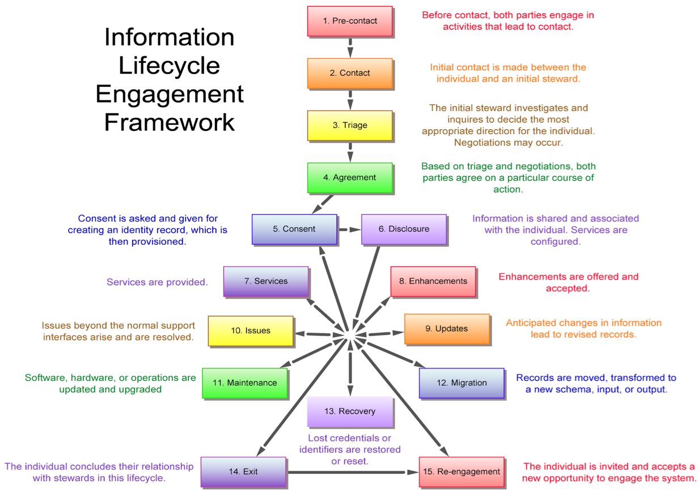

Amira 1.0.0
A Self-Sovereign Web of Trust Engagement Model
Joe Andrieu, Legendary Requirements, <joe@legreq.com>
Christopher Allen <ChristopherA@LifeWithAlacrity.com>
Shannon Appelcline, Skotos Tech, <shannona@skotos.net>
Lyre Calliope, @CaptainCalliope, Securing Change, <lyre.calliope@gmail.com>
Toni Lane Casserly, @tonilanec, Cultu.re / CoinTelegraph, <tlc@cultu.re>
Tim Chen, Coding Dojo, <tchen@codingdojo.com>
David Fields, PTB Ventures, <dave@ptbvc.com>
Michael Haley, AlphaPoint, <michael@alphapoint.com>
Shireen Mitchell, Stop Online Violence Against Women, <founder@stoponlinevaw.com>
Heather Vescent, The Purple Tornado, <puissant@heathervescent.com>
Kaliya Identity Woman Young, @identitywoman, <kaliya@identitywoman.net>
With special thanks to Pat McBennett and Raghav Chawla for their contributions.
Introduction
This paper began as a collaborative project at the fifth Rebooting the Web of Trust[1] workshop, held in Cambridge MA in October 2017. We reinterpret Christopher Allens Rebooting the Web of Trust user story,[2] through the lens of the Information Lifecycle Engagement Model (described in Appendix A). We present a human-centric illustration of an individuals experience in a self-sovereign, decentralized realization of the Web of Trust as originally conceived by Phil Zimmerman for PGP.[3]
In our scenario, Amira is a successful programmer working in Boston at a prestigious multi-national bank. Outside of working hours, Amira wants to give back to her community by writing software that matters. On the advice of her friend Charlene, Amira joins RISK, a self-sovereign reputation network that connects developers with projects while protecting participants anonymity, building reputation, and sending & receiving secure payments.
Information Lifecycle Engagement Model
We describe Amiras interactions with RISK using the Information Lifecycle Engagement Model. This 15-stage model captures the experience of a single, fictitious individual as she interacts with a proposed system. The model intentionally limits our focus to the connected experience of a single human protagonist and the people they engage along the way, in one or more paragraphs about interactions in each of the 15 stages. The Information Lifecycle Engagement Model is based on the work of Joe Andrieu and Ian Henderson from The Customer-Supplier Engagement Model Quick Starter[4], which uses a 12-stage model to illustrate how personal data stores can interact with CRM systems throughout the customer-supplier lifecycle. The model doesnt attempt to define all the requirements or possibilities in a system, but rather serves as a lens to focus on a single person across the full set of fifteen categories of interactions. These fifteen stages ensure that we have an example of each of the different steps found in essentially all information systems.
The engagement model presents the human context from both sides of the system. On one side, Amira interacts with RISK. On the other side, a variety of counter-participants in different roles interact with Amira through the system.
We adopt a strawman architecture for exploring the human experience using one possible embodiment. This non-binding set of suggested functionality allows authors and readers to sanity-check the feasibility of both individual actions and system capability. The strawman intentionally defers deeper technical issues for future design and implementation. The goal is not to design any particular implementation, but instead to make sure the basics ideas are sound from start to finish, capturing the human requirements independent of any specific technology choice.
The strawmen helps us understand the proposed system by providing a clear idea of one workable approach. Any actual implementation could vary greatly as subsequent constraints lead to different choices. This paper focuses on the human interactions and human relevance that drive the model, and not the specifics of any proposed implementation.
Participants
Throughout Amiras experience, different individuals create and query information in RISK.
Amira (BWHacker) The main actor in our model, Amira has a politically tense background. She wants to use her programming skills to positively impact the lives of oppressed people around the world.
Ben (BigBen44) A manager at a womens services non-profit. Ben is looking to connect with developers to build an app that helps women in difficult situations.
Charlene (CharlieOne) Amiras friend and fellow developer. She knows Ben indirectly through the RISK Web of Trust. She helps Amira get started with RISK.
Elias A mercenary working for the Syrian Hacker Army.
Firefly A developer who becomes Amiras successor as an app maintainer.
Services
RISK depends on, and is partially constituted by a number of decentralized services.
-
anonymous Internet support for private communication over the Internet.
-
identifiers self-sovereign, pseudo-anonymous sources of cryptographic authority. DIDs, etc.
-
name discovery ability to use an identifier to look up a unique name or address within a community.
-
web of trust reputation database non-hierarchical sources for reputation information (claims and evidence) about people within a community.
-
status database non-hierarchical sources of revocation and other status information for identifiers, names, and reputation.
-
community synchronous and asynchronous discussions and documents for a group of people.
-
source code repository location for developers to collaborate on software.
-
contract method for multiple parties to securely contract services with each other.
-
payment settlement between parties.
-
app marketplace repository for people to be download and install software created by developers.
Assumptions
-
All parties are users of computer and internet technology; most have above-average level of technical sophistication including development skills.
-
The Syrian Army is actively monitoring enemy technology and technologists and engaging in attacks against enemy technology.
-
Amira and Charlene have an existing relationship; Charlene is willing to vouch for Amira.
-
Charlene has a mobile application for RISK installed and configured on her mobile phone.
-
Decentralized developer systems (e.g., git) are easily available and accessible.
-
Amira uses multiple security technologies and techniques to protect her privacy.
-
Amira is not monitoring changes to her account while on vacation.
Stage 1 Pre-contact
Parties engage in activities that lead to contact.
Amira escaped life in Syria when she was 16. She resettled in Boston with an adoptive family and studied computer science in college, taking a job at a bank. The job pays her bills, but Amira wants to make a difference in the world.
One night, Amira discovers her opportunity. She sees an interview with Ben, the executive director of an international non-profit, on Cambridge Community Television[5], sharing his organizations vision for supporting oppressed women around the world. Ben envisions smart phones as the key to creating anonymous communication channels that safely and reliably connect women with local community services, specifically supporting victims of domestic violence and sexual assault.
Amira wants to contribute to Bens cause, but worries that engaging in activism might affect her job.
Fortunately, as the public face of his non-profit, Ben has established an identifier, BigBen44, on RISK and freely shares it with contacts, leaders, and developers who might help his cause. This gives Amira an opening to reach out to Ben.
Stage 2 Contact
Initial contact is made between the individual and an initial steward.
At a local professional event, Amira runs into her good friend Charlene, a fellow technologist with shared values. Amira discreetly asks Charlene if she knows anything about RISK and how Amira might use it to anonymously contribute to Bens project.
Using her phone, Charlene searches RISKs developer network to see if Ben is a connection. Charlene finds him, separated by just two degrees. The proximity of their connection on RISK allows Charlene to send Ben a priority introduction. But first, Charlene needs to understand if RISK is the right option for Amira.
Charlene tells Amira she may be able to help and suggests they meet after the event, without the crowd of their professional peers nearby. Amira agrees, intrigued and hopeful.
Stage 3 Triage
The initial steward investigates and inquires to decide the most appropriate direction for the individual. Negotiations may occur.
To understand if RISK is a good fit for Amira, Charlene asks about her goals and concerns. The security features of the system require a non-trivial amount of effort and if Amira isnt committed to doing it properly, the consequences could be worse than if she found some other way to work with Ben.
Amira explains that she wants to contribute to the project without fear of reprisal because of her background, ethnicity, or gender. She has strong technical skills and a proven ability to deliver useful, quality software. She wants work where she is valued for what she does, without risking reprisals for who she is. She wants to work in a purpose-driven community and to make a difference in the world, not just to make money. Shed like to find a community of peers who share these ideas people willing to help shift societys systemic imbalances anchored in race, gender, location, and nationality while protecting real-world identities.
Amiras ambition perfectly matches the reasons RISK was created. RISK is a decentralized system that relies on transactional reputation to establish pseudonymous identities for people who want to keep their real identities secret and to change the world. RISK connects developers with stakeholders to build projects that improve peoples lives, while simultaneously protecting the identity of those using the system. Charlene decides to act as an introducer for Amira.
Stage 4 Direction
Based on triage and negotiations, both parties agree on a particular course of action.
Charlene tells Amira about RISK, explaining the culture as well as the underlying cryptography and consensus mechanisms that make it all work. Amira immediately gets it and hopes she can find the relevant work missing in her life.
Charlene writes down the URL for the RISK decentralized source code repository, along with her public-facing RISK handle: CharlieOne. In addition, Charlene verbally shares a memorable phrase that will identify her on the RISK network, instructing Amira to repeat it, remember it, and to NOT write it down. Charlene asks Amira to create her own phrase to uniquely identify herself to Charlene when they connect online. To help remember the phrases, they use them in conversation a few times. Its a bit silly, but the humorous reinforcement helps.
Charlene recommends that Amira set up a bootable portable drive (e.g., a USB stick) to create a secure development environment while working with RISK. Fortunately, Amira isnt afraid to build a Linux machine from scratch; shes confident she can get the system up and running.
Stage 5 Consent
Consent is asked and given for creating an identity record, which is then provisioned.
During their conversation, Charlene explained that RISK is a system of mutual, earned trust, founded on a commitment to respect individuals right to privacy. This commitment is captured in a mutual agreement between all parties using the network.
RISKs Terms of Engagement include:
-
A Code of Ethical Conduct.
-
A confidentiality agreement to maintain anonymity of others and to keep the details of any project confidential except and unless explicitly authorized through the reputation system.
-
Consent to use a registered pseudonym for tracking activities and building reputation.
-
Procedures for registering and challenging reputation records.
-
Procedures for updating RISK, including the Terms of Engagement and an IP assignment.
-
Limited liability to minimize frivolous lawsuits and exorbitant claims.
-
A warranty of suitability that requires that participants act on their own free will as an individual and not an organization, entity, or company.
Using a credential she generated, 1) Amira cryptographically signs a statement containing her new pseudonym, BWHacker, short for Better World Hacker, 2) the name and a hash of the current RISK terms (v2.4.1), and 3) a statement that BWHacker agrees to these terms. This signed statement is a consent receipt. Amira stores it on her drive and on a backup service, then posts a hash of the receipt to RISK, recording the timestamp when BWHacker formally agreed to the terms.
Stage 6 Configure
Information is shared and associated with the individual. Services are configured.
Using a bootable portable drive, Amira sets up a development environment on her laptop. She then downloads RISK and begins working through the READMEs and installation directions.
Amira creates a unique identifier in the form of a DID, a Decentralized Identifier,[6] on the RISK decentralized network. This binds a publicly-verifiable credential to her new pseudonym, BWHacker. This pseudonym and the related DID will allow Amira to securely interact through RISK without revealing her real-world identity.
Using the RISK introduction system, Amira looks up CharlieOne and contacts her using her new handle, BWHacker. RISK establishes a secure channel and Amira and Charlene confirm each others identity using their memorized phrases. Now both parties have each others cryptographically secure identifiers for ongoing correspondence.
Stage 7 Services
Services are provided.
To bootstrap her reputation on RISK, Amira creates a Verifiable Credential, self-asserting her capabilities as a mobile software developer with her RISK pseudonym. Through RISK, she sends CharlieOne the credential and asks for an endorsement. Charlene is happy to help. She creates an endorsement, including the original claim, posts a hash of the endorsement to RISK, then sends both to BWHacker. This allows BWHacker to selectively enable anyone to verify the credential and CharlieOnes endorsement. In addition, Charlene has the ability to revoke this endorsement in the future, if the need arises (for example, the BWHacker account is transferred or penetrated.).
Now that BWHacker is in RISK with a suitable endorsement, CharlieOne introduces BWHacker to BigBen44. As BWHacker has not performed work through RISK, BigBen44 relies on CharlieOnes endorsement giving her status as a subject matter expert. BigBen44 shares background materials with BWHacker outlining the project and specifying requirements, timeframe, and acceptance criteria. After reviewing the materials, BWHacker responds with some clarifying discussion points and a draft statement of work (SoW). The discussion reflects a depth of professional experience that confirms CharlieOnes endorsement to BigBen44. BigBen44 and BWHacker formalize the SoW into a contract to create a SisterSpaces app using a RISK contract template that includes pricing, technical milestones, evaluation criteria, and progress payments.
RISKs standard contract templates have support for cryptographic smart contracts. Upon contract signing, BigBen44 deposits the full contract value in bitcoin into a smart escrow account. Each time BWHacker commits code achieving a technical milestone, BigBen44 is sent a randomized code sample to review as well as the ability to spin up a demo guaranteed to utilize the current codebase. BigBen44 can comment and suggest changes as desired. Upon milestone acceptance, the smart contract releases agreed-upon payment to BWHackers wallet address. Finally, the smart contract independently records BWHackers code delivery as well as BigBen44s reviews and final acceptance in the RISK reputation system.
The completed version 1.0.0 of the SisterSpaces app acts as the final deliverable of the contract. Ben accepts the deliverable, and final payment is released. Amira and Ben then post reviews of the experience of working together; this is a reputational claim on each others RISK identity, confirmed by the execution of their smart contract.
Stage 8 Enhancements
Enhancements are offered and accepted.
After successfully delivering BigBen44s project and receiving a glowing review, Amira decides to list her profile in the RISK developer directory. She reviews other entries in the directory to find examples of existing professional pseudo-anonymous profiles: RISK provides professional profile templates that show recent projects and endorsements. When creating her own profile, Amira opts out of displaying a picture of herself on the BWHacker profile. She is careful not to reveal any personal information. Her profile is stored on a decentralized file system and linked to her BWHacker RISK account. When people search RISK for developers, BWHackers profile will be displayed with her endorsements.
Stage 9 Updates
Anticipated changes in information lead to revised records.
After the account compromise (discussed in Stage 10) and creation of the BWHacker2 pseudonym, Amira buys a hardware wallet to help isolate and secure the credentials she uses to access RISK. She posts a transaction to RISK using her initial BWHacker2 credential, replacing the public part with one generated by her new wallet. The old credentials are no longer valid and her identifier remains under her control through her new credentials.
Stage 10 Problems/Issues
Issues beyond the normal support interfaces arise and are resolved.
Elias is a mercenary hired by the Syrian Hacker Army to track down and hack the author of SisterSpaces the app that Amira coded. Elias tracks BWHackers interactions to a dev environment (the one on Amiras USB key) and captures the private keys associated with the BWHacker RISK DID. Elias changes the master key in the RISK DID, stealing Amiras ability to communicate as BWHacker, and locking Amira out of her RISK identity. Unfortunately for Amira, this hack happens while she is on vacation. She doesnt realize the account is compromised until she returns two weeks later.
In this interim, Elias patches the SisterSpaces source code so that all traffic is sent to a Syrian surveillance system. Posting as BWHacker, Elias sends a message to BigBen44, telling him about a security bug fix for SisterSpaces and strongly recommends immediately releasing the new and improved v1.0.1. Ben, not realizing BWHackers account has been compromised, submits the v1.0.1 update to the app store.
Returning from her vacation, Amira realizes shes lost control of BWHacker. Not only has a fake app been released, but she cant even check the git repo to see what has changed in the new version. Amira calls Charlene for help. Charlene immediately revokes her endorsement of BWHacker and sends a message to BigBen44, telling him that BWHacker has been compromised along with SisterSpaces code. Taking no chances, Ben immediately disables BWHackers access to the git repository, reverts the recent commits, updates the version, and pushes v1.0.2 to the app store.
Unfortunately, Amira has no way to regain control of the original BWHacker identity. Instead, She creates a new DID as BWHacker2, repeating the steps she followed when she initially set up her account. Amira generates her credentials directly, making a point to update them with a more secure set as soon as possible (described in Stage 9 Updates). Amira recovers her reputational claims in Stage 13 Recovery.
Stage 11 Maintenance
Software, hardware, or operations are updated and upgraded.
Meanwhile, members of RISK are considering an improvement proposal concerning reputation claims. Originally, RISK reputations were limited to one-on-one reveals. Under the proposed improvement, users can choose to aggregate reputation data for presentation on their RISK profiles.
The majority of the RISK developers are in favor of the proposal, and it gets approval. Developers update the code base with the new feature and release the improvement. Users like Amira, Charlene, and Ben get a notification that there is a new reference implementation available. Separately, they download it and begin to use the new aggregated reputations.
Stage 12 Migration
Records are moved, transformed to a new schema, input, or output.
Seeing the power of displaying her RISK reputations on her profile, Amira decides to move her BWHacker2 persona off RISK to CommonX, a more widely-used system with more developers and projects. She cryptographically links BWHacker2 to CommonX so that users of both systems can verify that the two profiles reflect the same individual. BWHacker2 then reaches out to her existing reputation sources to ask for an endorsement of essentially the same reputation data in the new system. While this is largely automated, it does require the original author to countersign the reputational assertion in a format usable by CommonX. As the authors do so, the migrated reputations start to appear in BWHacker2s CommonX profile.
Stage 13 Recovery
Lost credentials or identifiers are restored or reset.
Unfortunately, Elias has taken complete control over the BWHacker profile. There is no way for Amira to recover it, but she can recreate the endorsements from her work as BWHacker. After setting up a new profile, BWHacker2, Amira recovers the rest of the reputation claims that were attached to BWHacker. She begins by contacting Charlene. They meet in person to confirm the change. Charlene creates and records an endorsement that BWHacker2 is the person formerly known as BWHacker, prior to the account compromise. CharlieOne then reaches out to BigBen44. After he verifies that CharlieOnes credential keys have not recently changed, Ben connects with BWHacker2 and asks some questions of his own to verify this is really the person hes been working with. Ben updates his account to set up a maintenance contract with BWHacker2 and double checks that the contract with BWHacker is terminated with prejudice.
Stage 14 Exit
The individual concludes their relationship with stewards in this lifecycle.
Amira had thought about leaving her job at the bank to work on developer projects full-time, but then the bank gives her an opportunity she cant refuse. The CIO asks Amira to oversee a comprehensive overhaul of its internal systems as its new Principal Architect. Amira accepts. However, in her new role, she realizes she no longer has the time to continue working on SisterSpaces. She tells BenBen44, and they agree to end the maintenance contract they had established after the initial version shipped. Ben hires a new developer, Firefly, gives them write access to GitHub, and revokes BWHacker2s access. To avoid future inquiries for development, Amira removes her BWHacker2 profile from the directory.
Stage 15 Re-engagement
The individual is invited and accepts a new opportunity to engage the system.
A year into the rebuild, the banks CIO has been replaced and Amira is fed up. She decides to try Fireflys latest version of SisterSpaces. While the app has become popular, she notices it is straining under heavy technical debt. Amira reaches out to BigBen44 once again as BWHacker2. The two rekindle their connection, and Ben tells Amira that he wants her back full time. Amira gives notice to the bank, reactivates her BWHacker2 profile in the directory, and steps into her dream job of writing socially-responsible software.
Appendix A
Information Lifecycle Engagement Model
The 15-stage model presented here is an instance of an Information Lifecycle Engagement Framework, as illustrated below.

Each phase in the model presents a concise description of one or two interactions illustrating the phase. Rather than attempting to describe every interaction across multiple users, the engagement model captures illustrative interactions for each phase in the lifecycle of a particular individuals engagement with the system. The model should be readable as a sympathetic narrative, clarifying the motivations of all parties and the viability of the described use. We use it to tease out the human requirements independent of the underlying technology.
This Information Lifecycle Engagement Model is based on the work of Joe Andrieu and Ian Henderson from The Customer-Supplier Engagement Model Quick Starter[7]. We have re-interpreted and expanded the 12 phases of the Customer-Supplier Engagement Model for suitability to identity information more generally, shifting away from the commercial nature of the relationship. We also added Maintenance, Migration, and Recovery phases to address the needs of operating an ongoing system.
The premise remains: working through each phase of the model provides a comprehensive yet lightweight review of necessary transactions for a given system. This can be done before a detailed specification, giving a coherent view of functional requirements that supports subsequent innovation as design and implementation details emerge.
Footnotes
[1]: http://www.weboftrust.info/
[2]: https://github.com/WebOfTrustInfo/rebooting-the-web-of-trust-fall2017/blob/master/topics-and-advance-readings/RWOT-User-Story.md
[3]: https://en.wikipedia.org/wiki/Web_of_trust
[4]: http://kantarainitiative.org/confluence/display/infosharing/Customer-Supplier+Engagement+Model+Quick+Starter
[5]: https://www.cctvcambridge.org/about
[6]: https://github.com/WebOfTrustInfo/rebooting-the-web-of-trust-fall2017/blob/master/topics-and-advance-readings/did-primer.md
[7]: http://kantarainitiative.org/confluence/display/infosharing/Customer-Supplier+Engagement+Model+Quick+Starter